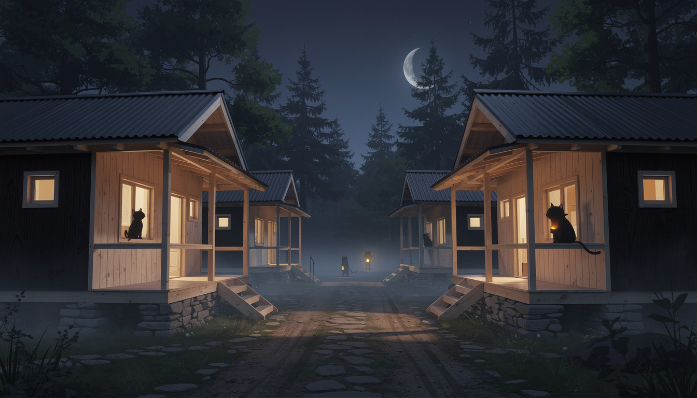
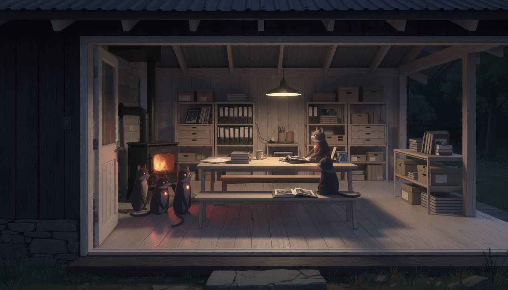
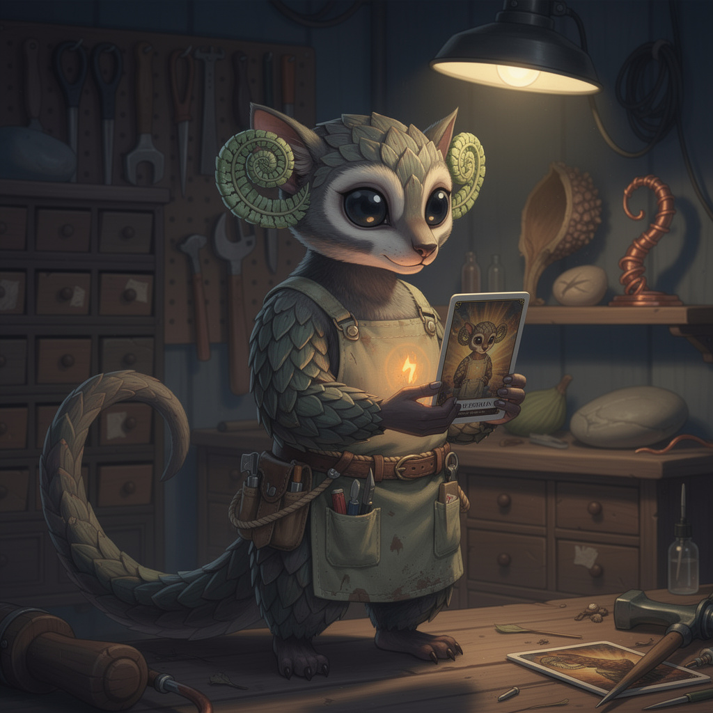
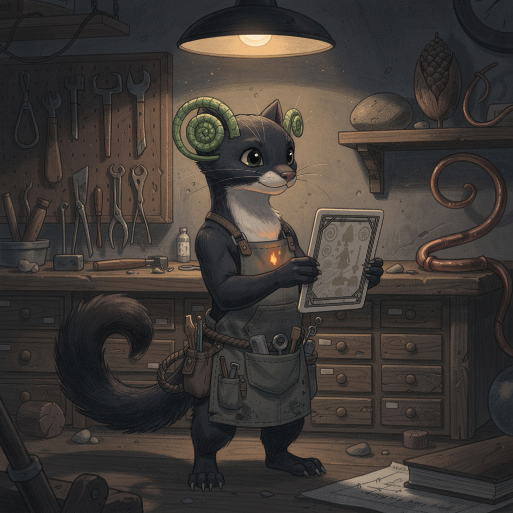
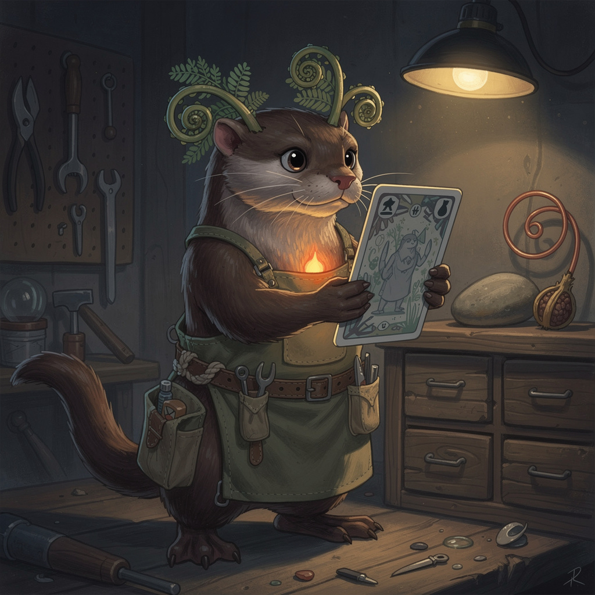
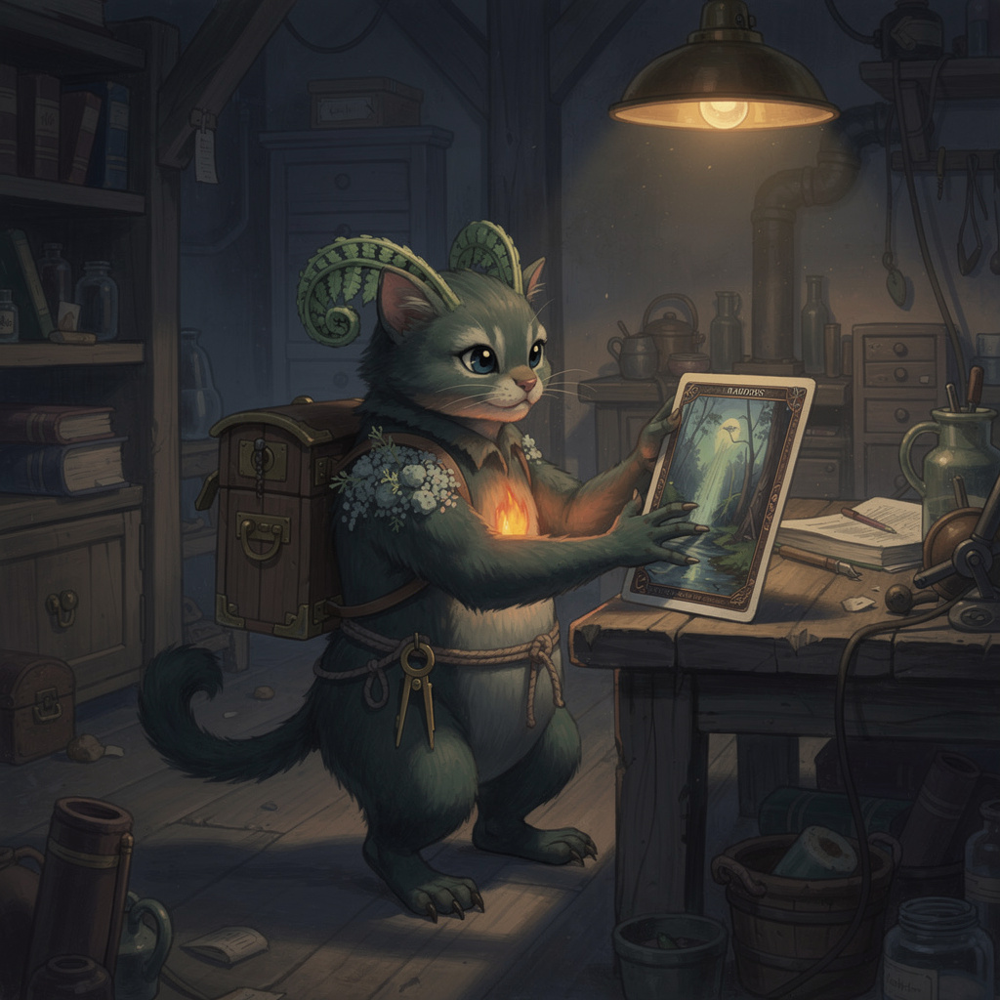

presence is silhouette and carried light · you never see them clearly · internal concept

{this.src=s+'?r='+this.dataset.r},700*this.dataset.r)}">
the lane, 3amTwo shapes in lit windows, one on a veranda rail, and two carried lights moving down the dark lane — residents crossing the village while their humans sleep. Not one face is legible. Nothing is missing.

{this.src=s+'?r='+this.dataset.r},700*this.dataset.r)}">
the hallGathered at the stove, one at the table with an album open. You know exactly what is happening in this room without seeing a single feature.
Below: the portraits that failed — the wrong artifact. A resident at village scale is forty pixels tall; fiddleheads and embers-as-detail do not exist there. Presence at distance was the problem to solve.

{this.src=s+'?r='+this.dataset.r},700*this.dataset.r)}">
1 · the scaled keeperBark-like overlapping scales, enormous night-eyes, a long plated tail. Reads as its own species instantly — no cat anywhere in it.

{this.src=s+'?r='+this.dataset.r},700*this.dataset.r)}">
2 · the marten buildSleek dark fur, cream throat, bushy tail, feline poise without feline anatomy. Closest to the grace you wanted to keep.

{this.src=s+'?r='+this.dataset.r},700*this.dataset.r)}">
3 · the otter buildBroad clever hands, blunt kind face — a natural keeper of favourite small objects.

{this.src=s+'?r='+this.dataset.r},700*this.dataset.r)}">
prior · the elderThe fiddleheads arrived as horns on a cat — the failure that taught us to name what a thing IS, never what it isn’t.
Every one is shown beside a single sleeved card nearly as tall as it is — the scale, and the reverence, in one image.